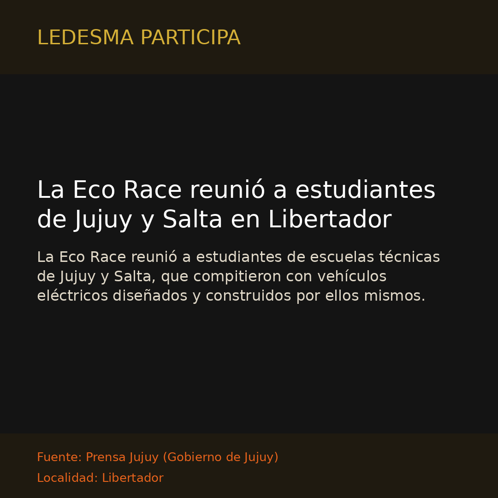

Libertador Gral. San MartínLa Eco Race reunió a estudiantes de Jujuy y Salta en Libertador
La Eco Race reunió a estudiantes de escuelas técnicas de Jujuy y Salta, que compitieron con vehículos eléctricos diseñados y construidos por ellos mismos.